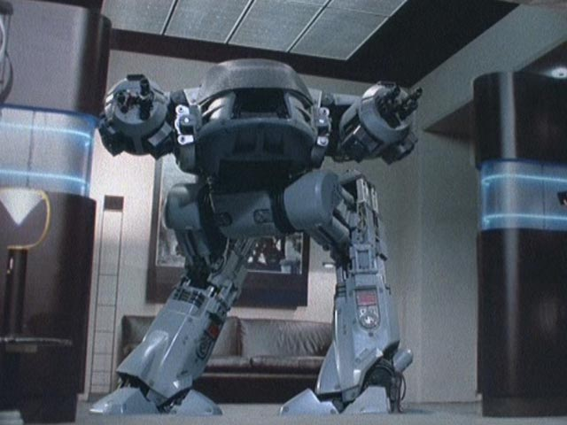
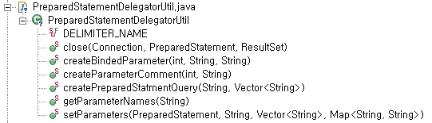

20091229
chipmunk http://www.extremeskins.com/showthread.php?t=292399 http://www.countrylivingskills.com/wp-content/uploads/2008/06/chipmunk.jpg20091228
20091223
http://www.kosmusic.co.kr/20091222
http://en.wikipedia.org/wiki/Adjacency_matrix20091221
한발씩 한발씩 나아가네~~ 전념, 몰입, 아니다, 그냥 즐기는 거다. 맞다. 아닌가? 그럴꺼다. 새끼손가락이 약간 짧지만20091215
booleans as method arguments are not acceptable.
http://stackoverflow.com/questions/135845/are-booleans-as-method-arguments-unacceptable/135871#13587120091211
http://gizmodo.com/5423716/we-fight-for-freedom-and-windows-vista-is-fcking-us-up?utm_source=feedburner&utm_medium=feed&utm_campaign=Feed%3A+gizmodo%2Ffull+%28Gizmodo%2920091207
http://4.bp.blogspot.com/_-0xChGmhVFE/SrXp0IOAXaI/AAAAAAAABZQ/Y7S6-cz8zvI/s400/Carl.bmp20091205
http://fliptron.com/wordpress/wp-content/uploads/2007/06/readabilitycropped.jpg20091120
20091117
http://www.codinghorror.com/blog/archives/001260.html20091116
20091113
이러면 돈이 없어도 재미가 있고, 비가 새는 집에 살아도 재미가 있고, 나물 먹고 물 마셔도 인생이 즐거워집니다.20091111
Kludge
http://thereifixedit.files.wordpress.com/2009/10/mikec-rubberfrogs.jpg http://thereifixedit.files.wordpress.com/2009/07/dicksonl-grocerybike.jpg http://thereifixedit.files.wordpress.com/2009/08/chip-gm-almostfourwheels.jpgGo
http://cache0.techcrunch.com/wp-content/uploads/2009/11/gogopher.png20091109
Caroline Island
Atafu Atoll
http://www.wired.com/wiredscience/2009/11/islands-space/20091106
http://www.joelonsoftware.com20091103
10/GUI
http://my.opera.com/area42/blog/2009/10/13/10-gui-reinvented-human-computer-interaction http://10gui.com/20091102
Ain't Nothing Wrong With That
Whether it's rock and roll or old soul (It don't matter) Disco, Calipso (It don't matter) Suit and tie or tie-dye (It don't matter) Snakeskins or Timberlands (It don't matter) Tight fade or long braid (It don't matter) Red head or brunette (It don't matter) Breakdance, slamdance (It don't matter) Do the jerk until it hurts I'm tellin' you Ain't nothin' wrong with that (I'm tellin' you) Ain't nothin' wrong with that (I'm tellin' you) Ain't nothin' wrong with that East or west coast (It don't matter) Down south or up north (It don't matter) Hollywood or in the hood (It don't matter) Either way it's all good (It don't matter) Block party, frat party, (It don't matter) Backyard or boulevard (It don't matter) Red, yellow, black or white (It don't matter) We all gettin' down tonight I'm tellin' you Ain't nothin' wrong with that (I'm tellin' you) Ain't nothin' wrong with that (I'm tellin' you) Ain't nothin' wrong with that Ain't nothin' wrong with that. Shake it Shake it Shake it 8x I don't know but I've been told When the music gets down in your soul It makes you want to loose control And there Ain't nothin' wrong with that Ain't nothin' wrong with that (I'm tellin' you) Ain't nothin' wrong with that (I'm tellin' you) Ain't nothin' wrong with that Ain't nothin' wrong with that. (Hollywood or in the hood. I'm tellin' you) Ain't nothin' wrong with that. (Suit and tie or tie-dye. I'm tellin' you) Ain't nothin' wrong with that It don't matter It don't matter (Let it go) It don't matter (Let it go) It don't matter (Let it go) It don't matter (Let it go)20091026
1Q84
흡입력은 좋다. 그런데 벌여 놓은 일에 대해선... http://www.flickr.com/photos/donttouchmapeyote/3820040004/
여행은 용기 처음 가는 곳, 처음 맡아 보는 공기, 처음 보는 사람... 익숙한 것에 잠깐 벗어나는 용기
flickr's progressive bar http://www.flickr.com/20091016
저 내일 결혼합니다. I'll get married tomorrow.20090928
http://choboweb.com/?page=6 전 소통하고 싶었나 봅니다.20090922
최고인재 가치는 평균적 인력의 300배 http://news.naver.com/main/read.nhn?mode=LPOD&mid=sec&sid1=001&sid2=141&oid=009&aid=0000531523 http://choboweb.com/121720090917
Do not pray for an easy life. Rather , pray to be a strong person. 쉬운 인생을 달라고 기도하지 말고 강한 사람이 될 수 있게 해 달라고 기도하라20090916
http://stackoverflow.com/questions/1344352/code-golf-duplicate-character-removal-in-stringCode Golf: Duplicate Character Removal in String
class T { public static void main(String[] a) { String s = "nbHHkRvrXbvkn"; int l; do { l = s.length(); s = s.replaceAll("(.)(.*)\\1", "$2"); } while (s.length() < l); System.out.println(s); } } s = s.replaceAll("(.)(.*)\\1", "$2");
| TargetString | $1 | $2 | matchedString | replacedTargetString | |
| STEP1 | nbHHkRvrXbvkn | n | bHHkRvrXbvk | nbHHkRvrXbvkn | bHHkRvrXbvk |
| STEP2 | bHHkRvrXbvk | b | HHkRvrX | bHHkRvrXb | HHkRvrvXk |
| STEP3 | HHkRvrvXk | H | HH | kRvrvXk | |
| STEP4 | kRvrvXk | k | RvrvX | kRvrvXk | RvrvX |
| STEP5 | RvrvX | v | r | vrv | RrX |
20090914
| ED 209 (Enforcement Droid 209) - Robocop  http://kwangaeto.egloos.com/6244153 | APU (Armored Personal Unit) - Matrix Reloaded http://www.dailymemo.net/pm/weblog.php?id=P249 |
| P-5000 Powerloader - Alien3 http://colonialmarines.wikispaces.com/Vehicles |
20090911
Timeout
신중하자. Timeout. 다시보자. Timeout. 감정노동.20090909
Ensemble20090907
http://codethought.com/blog/wp-content/uploads/2007/12/swingset-demo-ala-soylatte.png SwingSet 정말 익숙한 SwingSet 아직 갈길이 멀지만 난 Swing이 좋아요. http://wave.google.com/20090904
안정된 게임 서버를 만드는 비법 괜히 재주 부리지 말고 알기쉽게 짜라 http://blog.naver.com/imays/15003749907020090903
Touch 맞고20090902
비난하는게 가장 쉬웠습니다. 아 사람을 움직이는 건 같이하며 즐기는 조화 www.ieve.or.kr 2009년 9월 1일자 20 page "김양수의 카툰판타지 생활의 참견" 내 생각에 저건 분명 라면이다. 그리고 저녁에 분명 라면 비슷한 냄새가 났었어. 라면사라 나갔다가 지갑을 안 가져와서 다시 집으로 돌아왔다. 결국 안 먹었다.20090901
자기 자신과 가장 비슷한 사람20090825
http://choboweb.com/1131 http://choboweb.com/attach/1/1379363156.jpg20090821
The Collider Queen
http://link.brightcove.com/services/player/bcpid1431564346?bclid=824099635&bctid=30191516001 http://navercast.naver.com/science/physics/85120090820
http://74.55.132.151/images/2009/01/bcle-04.jpg http://www.instantshift.com/2009/01/29/20-corporate-brand-logo-evolution/20090810
베타라서 행복해요~~ I'm happy it's BETA. http://www.shayhowe.com/web-design/300-creative-google-logos/ 정신건강 제일주의 The Mental Health is a first priority. http://pds11.egloos.com/pds/200903/11/40/b0065940_49b75668e2df5.jpg http://pds112.cafe.daum.net/download.php?grpid=70n&fldid=5Y2&dataid=436702&fileid=1®dt=20090807193835&disk=11&grpcode=humornara&dncnt=N&.jpg20090804
은근슬쩍 니글니글 풍덩풍덩 글썽끌썽 슬렁슬렁 두리뭉실 송알송알 첨벙첨벙 달랑달랑 짜릿짜릿 알콩달콩 송글송글 대롱대롱 덜렁덜렁 찌릿찌릿 쫑알쫑알 삐뽀삐뽀 껑충껑충 쭈볏쭈볏 요리조리 중얼중얼 헐레벌떡 깡총깡총 오밀조밀 덜컹덜컹 쫄래쫄래 팔랑팔랑 펄쩍펄쩍 모락모락 슥싹스싹 바글바글 주렁주렁 따닥따닥 이글이글 쿵쾅쿵쾅 보글보글 알록달록 디룩디룩 노릇노릇 조근조근 부글부글 출렁출렁 사각사각 파릇파릇 말캉말캉 말랑말랑 살랑살랑 듬성듬성 푹신푹신 쭉쭉빵빵 듸뚱듸뚱 비실비실 새콤달콤 싱글벙글 번쩍번쩍 추적추적 삐죽삐죽 이리저리 반짝반짝 반들반들 몽글몽글 미끌미끌 휭둥그레 번들번들 스리슬쩍 펄럭펄럭 도란도란 징걸징걸 나긋나긋 질퍽질퍽 살금살금 찰랑찰랑 올망졸망 철퍽철퍽 슬금슬금 데굴데굴20090728
Gravitational Lens
 http://navercast.naver.com/science/image/803
http://navercast.naver.com/science/image/803
20090724
Woodpecker http://www.creationonthefly.com/aviary/images/blog/woodpecker-big.png http://stackoverflow.com/questions/164432/what-real-life-bad-habits-has-programming-given-you20090721
20090717
http://www.sinnaschool.com/zboard/data/star_gallery/Crab_Nebula.jpg20090716
Ramanujan
http://upload.wikimedia.org/wikipedia/commons/thumb/5/5c/Ramanujan.jpg/225px-Ramanujan.jpg20090713
20090703 - Mutual Influence
http://www.mathacademy.com/pr/minitext/escher/drawing_hands.gif20090702
http://v.daum.net/link/3552635/http://bopstory.tistory.com/entry/%ED%9E%88%ED%8B%80%EB%9F%AC%EA%B0%80-%EC%8A%A4%ED%85%94%EC%8A%A4%EA%B8%B0%EB%A5%BC-%EA%B0%9C%EB%B0%9C%ED%96%88%EB%8B%A4%EB%A9%B4-120090630
고속 푸리에 변환은 공학에 혁명을 일으켰다. MIT의 Gil Strang은 "The FFT is the most valueable numerical algorithm of our lifetime." 이라고 말할 정도였다. 물리학자 푸리에와 고속 푸리에 변환 p.216 푸리에 변환도 모르겠고 라플라스 변환도 모르겠고 주파수영역도 모르겠다. 분명 대학교때 배웠는데 왜 졸업하고 한참 지나서야 궁금해지기 시작한걸까? 푸리에 변환에 관련된 육상선수 비유 http://blog.naver.com/keaton108?Redirect=Log&logNo=6001890985420090629
I can accept failure, but I can't accept not trying. - Michael Jordan http://blog.naver.com/clevekim/14007240987020090624
이 제3의 길은 역사적 접근법이라고 부를 수 있다. 학생들에게 실제적 기법들을 가르치되, 그것들이 처음 개발되었던 때의 역사적 맥락 안에서 다루기 때문이다. 오일러 상수 감마, p15 미국의 저명한 수학저술가 이브스(Howard Whitley Eves, 1911 ~ 2004)도 "수학적 개념의 진정한 이해를 역사적 연원의 분석없이 얻을 수는 없다"라고 섰는 바 오일러 상수 감마, p38320090623
그냥 심심풀이 지적유희를 지향합니다. Just focus on killing time intellectual game. http://cfs10.tistory.com/image/5/tistory/2008/12/13/11/16/49431af78a0abCamelBak
Gargoyle
 http://en.wikipedia.org/wiki/File:Notre_dame-paris-view.jpg
http://tbn2.google.com/images?q=tbn:XsfCvyK5-vhFOM:http://www.gargoylestore.com/dedo_gargoyle_L.jpg
http://tbn2.google.com/images?q=tbn:BBwKO_Ca2fYmSM:http://www.thesecretofbluewater.com/nadia-note-gargy.jpg
http://en.wikipedia.org/wiki/File:Notre_dame-paris-view.jpg
http://tbn2.google.com/images?q=tbn:XsfCvyK5-vhFOM:http://www.gargoylestore.com/dedo_gargoyle_L.jpg
http://tbn2.google.com/images?q=tbn:BBwKO_Ca2fYmSM:http://www.thesecretofbluewater.com/nadia-note-gargy.jpg
20090617
20090615
소프트웨어 크리에이티비티 2.0 예를 들어, 크리스토퍼 알렉산더는 'Notes on the Synthesis of Form'(Harvard University 1964)에서 이렇게 말한다. "비행기를 날리는 익형 날개가 발명된 시기는 '공기보다 무거운 물체는 날지 못한다'라고 증명된 직후다. 익형 날개가 작용하는 공기역학은 날개를 사용하고서도 한참이 지나서야 이해하게 되었다. 그러니깐 공기역학 이론이 익형 날개 발명에 기여했다기보다는 익형 날개 발명과 사용이 공기역학 이론의 발전에 크게 기여한 셈이다." http://upload.wikimedia.org/wikipedia/commons/4/49/Christopher_Alexander.jpg20090612
http://www.kissmetrics.com/common/images/kiss.png20090528
20090525
http://blog.naver.com/mapbak?Redirect=Log&logNo=67572604 내가 달리는 길은 love love love love 허나 그 길엔 온통 덫 덫 덫 덫 http://americatsures.files.wordpress.com/2008/03/americatsures_mouse-trap.gif20090522
무엇이 궁금합니까? 정말 많이 궁금합니까? 몇 사람 정도에게 물어봤나요? 음.... 그럼 궁금한 것이 탄생한 배경과 어떻게 흘러왔는지 한번 찾아보세요. 저는 Euler's number e가 어떤 의미를 지니는지 너무 궁금합니다. http://ko.wikipedia.org/wiki/E_(%EC%83%81%EC%88%98)하루에 두번 울기 용기를 주셔서 감사합니다.
역시 A4와 연필이 좋다. 지우개도.

20090519
인생 끝없는 시행착오 software 그 끊없는 시행착오 The life is trial and error. The software is trial and error too.20090511
It's so hard to say goodbye to private method. Today, For about 2 hours, I changed private method to another class' public static method. And wrote test code of them. That's it. 아~~ 코드가 깔끔하고 예쁘요. 코드도 예쁘면 안되나요. Wow~~ this code is simple and beautiful. We need the simple and beautiful code. Yeah~~~
20090508
GoodBye~~ private method
Testing private methods may be an indication that those methods should be moved into another class to promote reusability. http://www.artima.com/suiterunner/private2.html20090507
http://files.youngsamsung.com/uploads/ardorboard/editor/make_1203601223313.jpg 시청자가 오해할까봐 한마디 하겠습니다. 지금 경기장에 있는 박(Park)은 한 명뿐입니다. http://sports.khan.co.kr/news/sk_index.html?cat=view&art_id=200905062207336&sec_id=520301"픽셀 하나하나까지 디자인하라." "단순화 하라." http://www.ideakeyword.com/1533
문제가 발생된 지점에서 그것을 해결하려고 하면 절대 불가능하다. 필요한 것은 관점의 전환이다. http://www.ideakeyword.com/1528
창조적아이디어는 지우는 것에서부터 시작된다.
20090503
20090429
braid http://www.worldiv.com/pixs/tim-run-50-g.gif http://braid-game.com/icon_images/mimic-threaten.png 완전 뒷통수 후려치는 내용이네요.. http://ruliweb4.nate.com/ruliboard/read.htm?main=xbox&table=liveac_xbox&left=b&db=2&sort=visit&num=3065 http://blog.naver.com/gothamsi?Redirect=Log&logNo=6554322320090428
If you could only ask 1 interview question to determine whether or not to hire a programmer what would it be? "Give me a list of question you'd ask in an interview and answer them". http://stackoverflow.com/questions/361182/if-you-could-only-ask-1-interview-question-for-a-programmer-what-would-it-be http://images.teamsugar.com/files/upl0/1/18239/13_2008/job%20interview.JPG20090427
20090425
We put an emphasis on building automated tests so that we can let people do what people are good at, and have computers do what computers are good at. 우리가 자동화된 테스트의 확립을 강조하는 이유는 이를 통해 인간은 인간이 잘 할 수 있는 일을 하고, 컴퓨터는 컴퓨터가 잘할 수 있는 일을 하게 되기 때문이다. http://googletesting.blogspot.com/2007/03/difference-between-qa-qc-and-test.html20090423
주석을 지원하지 않는 프로그래밍 언어 강제적인 indent(4 spaces) example) public class Test { public static void main(String[] args) { for (int i = 0; i < 10; i++) { if (i%2 == 0) { System.out.println("OK"); } else { System.out.println("FAIL"); } } } } Test.java:7: invalid indent, 16 spaces required System.out.println("FAIL"); ^The computer language doesn't support comments. Forced indent.
20090423
우리가 타인을 이해한다는 것은 불가능해졌는지도 모릅니다. 겸손한 개발자가 만든 거만한 소프트웨어, p.4720090421
여유, 품질을 고민하는 시간 Extra time, it's time to think over quality. http://book.interpark.com/product/MallDisplay.do?_method=detail&sc.shopNo=0000400000&sc.dispNo=028023020001001&sc.prdNo=20210240320090420
http://www.sun.com/third-party/global/oracle/20090415
http://kldp.org/files/1239758553389.png20090413
코드를 다듬을수록 대칭성이 살아 나는구나. As refactoring codes, as being symmetric. http://www.usenix.org/events/vm04/tech/full_papers/cutumisu/cutumisu_html/Figure2.jpg20090407

20090406
Super Stack2
http://yagoogong.com/game/super2.swf “Give somebody a fish and they eat for a day. Teach somebody to fish they eat for life!”20090405
http://photo.naver.com/gallery.nhn?m=viewGallery&gallery.galleryId=46&titleUrl=http%3a%2f%2fboomfiles.naver.net%2fexphoto01%2fadminFiles%2f2009%2f03%2fpop_title%285%29.png 다른 기술적 도전과 마찬가지로 범용의 프로세스를 설계하는 것은 많은 절충과 타협에 대해 주의 깊은 고려를 필요로 한다. S.Furber http://huseyint.com/projeler/extjs-cheat-sheets/Ext_Cheat_Sheet-1-1280x1024.png
http://www.fsf.org/licensing/licenses/quick-guide-gplv3.html#new-compatible-licenses
http://huseyint.com/projeler/extjs-cheat-sheets/Ext_Cheat_Sheet-1-1280x1024.png
http://www.fsf.org/licensing/licenses/quick-guide-gplv3.html#new-compatible-licenses
20090403
http://hippydream.blogsome.com/wp-admin/images/qtjambiartwork.png20090330
 http://www.strategicpath.com.au/assets/bdm/logos/Thought_Works.gif
http://www.mediatoday.co.kr/news/photo/200903/78430_83380_5410.jpg
http://www.strategicpath.com.au/assets/bdm/logos/Thought_Works.gif
http://www.mediatoday.co.kr/news/photo/200903/78430_83380_5410.jpg
20090329
http://navercast.naver.com/science/image/259 Navicula glaciei20090328
20090322
private void drawRoundRectImage(Graphics g, File file, RoundRectangle2D.Double imageRect) throws Exception { try { GraphicsConfiguration gc = ((Graphics2D) g) .getDeviceConfiguration(); BufferedImage img = gc.createCompatibleImage((int)imageRect.width, (int)imageRect.height, Transparency.TRANSLUCENT); Graphics2D g2 = img.createGraphics(); Image image = ImageIO.read(file); g2.setComposite(AlphaComposite.Clear); g2.fillRect(0, 0, (int) imageRect.width, (int) imageRect.height); g2.setComposite(AlphaComposite.Src); g2.setRenderingHint(RenderingHints.KEY_ANTIALIASING, RenderingHints.VALUE_ANTIALIAS_ON); g2.translate(-imageRect.x, -imageRect.y); g2.fill(imageRect); g2.translate(imageRect.x, imageRect.y); g2.setComposite(AlphaComposite.SrcAtop); g2.drawImage(image, 0, 0, (int) imageRect.width, (int) imageRect.height, this); g2.dispose(); g.drawImage(img, (int) imageRect.x, (int) imageRect.y, this); } catch (Exception e) { } } http://weblogs.java.net/blog/campbell/archive/2006/07/java_2d_tricker.html20090320
내가 좋다.. 아니 내 코드가 좋다. 켁 큇 코드의 중복이 사라지고 객체간 결합도가 0이 되었다. 코드는 오늘 예술로 승화했다 상속의 틀에서 벗어나 구성과 결합에 익숙해 졌다 내가좋다.. 아니 내 코드가 좋다. http://gall.dcinside.com/list.php?id=programming&no=117383&page=1I like me.. No, I like my code. The duplicated code are gone. The index of the coupling with objects is 0. My code sublimated in art today. I was free from the inheritance traps and came natural to the composition and combination. I like me.. No, I like my code.
} } ;)"dlroW ,olleH"(nltnirp.tuo.metsyS { )sgra ][gnirtS(niam diov citats cilbup { tseT ssalc cilbup
20090317
DVI:Digital Visual Interface D-SUB:D Subminiature SLI:Scalable Link Inerface PCI:Peripheral Component Interconnect SATA:Serial Advanced Techonology Attachment ATA:Advanced Techonology Attachment http://en.wikipedia.org20090317
http://www.biscade.com/office/20090312
10년은 배우고 10년은 따라 해보고 10년은 창조하고 10년은 가르친다. http://www.jaso.co.kr/331 learn for 10 years. imitate for 10 years. create for 10 year. teach for 10 year.20090310

Wireshark Filter (http.response == 1 && ip.dst == 10.20.10.52) || (http.request == 1 && ip.src == 10.20.10.52)
My Eclipse Layout
20090306
http://careview.chosun.com/site/data/html_dir/2009/03/04/2009030400892.html20090303
I'm telling you about some experiences. http://java.dzone.com/news/testing-tales-about20090301
20090223
http://googlekoreablog.blogspot.com/2009/02/blog-post_17.html http://2.bp.blogspot.com/_Gkjd3ziT1xY/SZqJnvhH42I/AAAAAAAAA3g/3cw726v9Nb0/s400/blog+2.jpg20090222
http://www.njpartcenter.kr/ie.html20090219
소통에는 반드시 불협화음이 따른다. 항상 두 사람의 의견이 똑같다는것은 둘 중 하나는 필요 없다는 의미다 There is friction with communication. -- 1 Communication is usually accompany by friction. -- 2 Two people always have a same opinion, it means one of them is not necessary. http://moai.tistory.com/84120090218
The Atwood System of Real Ultimate Programming Power 1. DRY - Don't Repeat Yourself. 2. KISS - Keep It Simple, Stupid. 3. YAGNI - You Ain't Gonna Need It. it's a waste of your time. Go read and write some code! http://www.codinghorror.com/blog/archives/000856.htmlYou're not alone. At any given moment, somewhere in the world someone struggles with the same software design problems you have. You know you don't want to reinvent the wheel (or worse, a flat tire), so you look to Design Patterns. http://www.codinghorror.com/blog/archives/001145.html http://sourcemaking.com/antipatterns/reinvent-the-wheel
20090216
장기하와 얼굴들 - 싸구려 커피
싸구려 커피를 마신다
미지근해 적잖이 속이 쓰려온다
눅눅한 비닐장판에 발바닥이
쩍 달라 붙었다 떨어진다
이제는 아무렇지 않어
바퀴벌레 한마리쯤 쓱~ 지나가도
무거운 내일 아침엔
다만 그저 약간에 기침이 멈출 생각을 않는다
축축한 이불을 갠다
삐걱대는 문을 열고 밖에 나가본다
아직 덜갠 하늘이 너무 가까워 숨쉬기가
쉽지를 않다 수만번 본 것만 같다
어지러워 쓰러질 정도로~ 익숙하기만 하다
남은 것도 없이 텅빈 나를 잠근다
싸구려 커피를 마신다
미지근해 적잖이 쓰려온다
눅눅한 비닐장판에~ 발바닥이
쩍하고 달라 붙었다가 떨어진다
뭐 한 몇년간 세숫대야에
고여있는 물 마냥 그냥 완전히 썩어가지고
이거는 뭐 감각이 없어
비가 내리면 처마 밑에서 쭈그리고 앉아서
멍하니 그냥 가만히 보다보면은
이거는 뭔가 아니다 싶어
비가 그쳐도 희끄므레죽죽한
저게 하늘이라고 하기에는 문가 너무 낮게
머리카락에 거의 닿게 조그만 뛰어도 정수리를
쿵!하고 찢을거 같은데
벽장속 제습제는 벌써 꽉차 있으나마나
모기 때려잡다 번진 피가 묻은 거울을 볼때마다
어우! 약간 놀라
제 멋대로 구부러진 칫솔 같다 이빨을 닦다 보면은
잇몸에 피가 나게 닦아도 당췌 치석은 빠져 나올줄을 몰라
언제 땃는지도 모르는 미지근한 콜라가 담긴
캔을 가져다 한모금 아뿔사 담배 꽁초가
이제는 장판이 난지 내가 장판인지도 몰라
해가 뜨기도 전에 지는 이런 상황은 뭔가
싸구려 커피를 마신다
미지근해 적잖이 속이 쓰려온다
눅눅한 비닐 장판에 발바닥이 쩍 달라 붙었다 떨어진다
이제는 아무렇지 않어
바퀴벌레 한 마리쯤 쓱 지나가도
무거은 매일 아침엔 다만 그저 약간에
기침이 멈출 생각을 않는다
축축한 이불을 갠다 삐걱대는 문을 열고
밖에 나가본다
아직 덜 갠 하늘이 너무 가까워 숨쉬기가 쉽질 않다
수만번 본것만 같다
어지러워 쓰러질 정도로 익숙하기만 하다
남은것도 없이 텅빈 나를 잠근다
싸구려 커피를 마신다
미지근해 적잖이 속이 쓰려온다
눅눅한 비닐 장판에 발바닥이 쩍 하고
달라붙었다가 떨어진다
|
I drink cheap coffee. It's lukewarm and my stomach is rather getting burning. The bottom of my feet stick and then come off at damp rubber floor. It's nothing that at least a roach crawl quitely. When heavy tomorrow morning, just some coughing doesn't stop yet. I fold up a damp beddings. I just open a creaky door and go out. The not-yet-clear sky is too much close so that it's not easy to breathe. It seems like to see that a million times. I get used to that as much I'm so dizzy that I tumble down. I lock myself without leftover. I drink cheap coffee. It's lukewarm and my stomach is rather getting burning. The bottom of my feet stick and then come off at damp rubber floor. I can't feel anything like rotten water in a wash bowl for some year. When it's raining, I squart under the eaves and look blankly, I think that it's not sound. After raining, the ashy sky is too low to be called as the sky. so if I hope little bit, I'll bump my top of the head against it with a thud. My wall closet is full of sillica gel but it's useless. Whenver I see a mirror strain comes from killing mosquito, Oh! I'm astonished little. |
20090215
Gotchas http://oreilly.com/catalog/9780596009090/cover.html20090212
http://www.qtsoftware.com/20090210
http://i23.photobucket.com/albums/b389/epiac1216/Mozilla/browsers-head.jpg By OS By Browser By Version http://images.google.co.kr/imgres?imgurl=http://giantrobots.thoughtbot.com/assets/2008/10/17/testing.JPG&imgrefurl=http://giantrobots.thoughtbot.com/2008/10/17/non-test-code-is-trivial&usg=__x-H6H-KT0xV0eVSJKQZbTBiE_58=&h=439&w=640&sz=64&hl=ko&start=1&sig2=wLwKRa4eLbAsXgHwDu8WKA&um=1&tbnid=xLQ6HS6DNSjkAM:&tbnh=94&tbnw=137&ei=zhyRSfDUKpfItQON56mlCw&prev=/images%3Fq%3Dtesting%26um%3D1%26hl%3Dko%26newwindow%3D1%26sa%3DN
http://images.google.co.kr/imgres?imgurl=http://giantrobots.thoughtbot.com/assets/2008/10/17/testing.JPG&imgrefurl=http://giantrobots.thoughtbot.com/2008/10/17/non-test-code-is-trivial&usg=__x-H6H-KT0xV0eVSJKQZbTBiE_58=&h=439&w=640&sz=64&hl=ko&start=1&sig2=wLwKRa4eLbAsXgHwDu8WKA&um=1&tbnid=xLQ6HS6DNSjkAM:&tbnh=94&tbnw=137&ei=zhyRSfDUKpfItQON56mlCw&prev=/images%3Fq%3Dtesting%26um%3D1%26hl%3Dko%26newwindow%3D1%26sa%3DN
20090209
SVN Synchronization State http://www.eclipse.org/subversive/documentation/teamSupport/workspace_synch.php20090208
JigSaw Puzzle - Starry Night 500 pieces. I thought it takes just 2 ~ 3 hours to do. But it's CHAOS... My eyes are sore and brain is empty. Help me.20090206
 http://img.news.yahoo.co.kr/picture/2008/98/20080820/2008082022583660598_230019_0.jpg
제가 중1일때 기타를 잡습니다.
I pick up a guitar in the first year at middle school.
http://img.news.yahoo.co.kr/picture/2008/98/20080820/2008082022583660598_230019_0.jpg
제가 중1일때 기타를 잡습니다.
I pick up a guitar in the first year at middle school.
20090205
DRY - Don't Repeat Yourself - In code, comments or documentation. Red, Green, Refactor http://stackoverflow.com/questions/513953/i-am-compiling-a-rules-of-programming-mindset-for-my-team-what-are-yours http://blog.naver.com/geniushwang/80051738439소통의 어려움 "XX빌딩 5층이요" "XX빌딩 5층이라구요?" "네..." "짜장 하나 짬뽕 하나요" "짬뽕 하나 짜장 둘이요?" "아.. 아뇨. 짜장 하나 짬뽕 하나요" - 난 중국집하고도 소통이 안 됨... OTL... 조직 구성원 간의 소통은 얼마나 어렵겠나~ http://monac.egloos.com/2224779
네 맞습니다. 여긴 저의 창작물은 거의 없습니다. 그러나 있기도 합니다.
20090202
어느 파전집 벽에...20090201
20090131
자신감 충만 Full Confidence http://ncc.phinf.naver.net/webtop02/2009/1/29/94/7.jpg20090129
다람쥐 헌 쳇바퀴에 타고파 http://offree.net/2259 Pangram A pangram (Greek: pan gramma, "every letter"), or holoalphabetic sentence, is a sentence using every letter of the alphabet at least once. Pangrams are used to display typefaces and test equipment. For example, the pangram "The quick brown fox jumps over the lazy dog" was utilized by Western Union to test Telex/TWX data communication equipment for accuracy and reliability[citation needed] and is now used by a number of computer programs (most notably the font viewer built into Microsoft Windows) to display computer fonts.[citation needed] http://en.wikipedia.org/wiki/Pangram http://3.bp.blogspot.com/_P5wRegAZ8Lo/Rtg-VUmDSjI/AAAAAAAAAEo/KgqEyp5rVbw/s400/fox2.jpg
http://3.bp.blogspot.com/_P5wRegAZ8Lo/Rtg-VUmDSjI/AAAAAAAAAEo/KgqEyp5rVbw/s400/fox2.jpg
수학자 레온하르트 오일러 그가 계산을 하고 있는 모습은 마치 사람이 숨을 쉬는 것 같았고, 독수리가 공중에 머물러 있는 것 같았다. - 프랑수아 아라고(1786-1853): 프랑스의 수학자 "파이의 역사" p191 Euler calculated without apparent effort, as men breathe, or a eagle sustains themselves in the wind. - Francios Arago
 http://www.post.ch/en/ph_euler_big.jpg
Continued Fraction
http://upload.wikimedia.org/math/a/c/3/ac36499053d43d4ecd46a4624c0a05b2.png
http://www.post.ch/en/ph_euler_big.jpg
Continued Fraction
http://upload.wikimedia.org/math/a/c/3/ac36499053d43d4ecd46a4624c0a05b2.png
Sharp And Deep Dent Crying over spilt milk will do you no good now.
20090128
쉽지 않지만 변해야 합니다.
20090125
20090123
20090121
Find Hidden Picture20090119
행복하다.20090117
nohup - no hang up http://files.fosswire.com/2008/07/server_remote.jpgPet Peeve http://stackoverflow.com/questions/423823/whats-your-favorite-programmer-ignorance-pet-peeve http://hanger18chicago.com/zencart/images/babosbird.jpg http://forum.uglydolls.com/download/file.php?avatar=104_1203085773.jpg http://www.gravatar.com/avatar/af71a321889d0929bdac38bb23dca6a9?s=128&d=identicon&r=PG
Etude 삶은 좀 긴 연습곡 Life is just little bit of long etudes. http://www.music.princeton.edu/~dan/arrow11.gif
20090115
세상이 아니 우주가 조금씩 아름답게 보이면...가설을 세우고 검증하라. 에러를 사랑하라. http://sunnykwak.egloos.com/4063669
NGE Karaoke [Cruel Angel's Thesis]
20090113
git http://git-scm.com/images/header.gif Git is distributed version control system focused on speed, effectivity and real-world usability on large projects.가끔 코딩하게 될때 얼마나 기쁘던지.. http://www.okjsp.pe.kr/bbs?seq=131462 코딩의 즐거움
 http://industrialxp.org/images/codingStandards.jpg
http://industrialxp.org/images/codingStandards.jpg
20090112
과속금지 - No Speeding http://www.boingboing.net/images/20ah.jpg Slow Down http://firstrung.co.uk/dbimgs/slow_down.jpg http://www.crikey-adventure-tours.com/images/turtle_01.jpg 뉴트로지나 스킨클리어링 폼 클렌져 Neutrogena Skinclearing Foam Cleanser 존슨즈 베이비 수딩 내추럴 나리싱 로션 Johnnson's Baby Soothing Naturals Nourishning Lotion 뉴트로지나 노르웨이젼 포뮬러 릴랙싱 바디 모이스춰라이저 Neutrogena Norwegian Formula Relaxing Body Moisturizer 뉴트로지나 센스티브 폼 클렌져 Neutrogena sensitive Foam Cleanser 뉴트로지나 노르웨이젼 포뮬러 바디 에멀젼 Neutrogena sensitive Formula Body Emulsion 메이블린 뉴 언스탑퍼블 샤이니 블랙 마스카라 Maybellin New Unstoppable Shiny Black Mascara 아비노 데일리 모이스춰라이징 바디 워시 Aveeno Daily Moistrurizing Body Wash http://patzzi.joins.com/component/photo_mmdata/thumb_295/200803/sm_TH_2008032714211927142119_1.jpg
http://patzzi.joins.com/component/photo_mmdata/thumb_295/200803/sm_TH_2008032714211927142119_1.jpg
20090109
코딩을 예술로 승화시켜야 한다는 관점을 지닌 개발자들의 특징은 다음과 같다. - 좋은 코드를 만들기 위해서 이미 잘 동작하는 코드라 할 지라도 개선할 점이 있다면 고쳐야 한다. - 절대로 시간의 제약이나 마감 시간에 ?겨서는 안된다. 대충 짜버리고 마는 건 안 만드니만 못하다. - 스스로 납득할 때까지 코드를 개선해 나가면서 고민한다. 협상이라는 건 없다. - 좋은 코드는 결과 뿐만 아니라, 실행 과정 자체도 완벽해야만 한다. - 품질은 절대 협상할 수 있는 대상이 아니며, 타협적인 개발자는 변절자에 불과하다. 두번째 관점은 '코딩은 생산을 목적'으로 한다고 생각하는 것이다. 이들의 특징은 다음과 같다. - 생산성 우선주의자. 일단, 주어진 시간에 더 많은 코드, 더 많은 결과를 내야 한다. - 과정은 중요한 게 아니다. 무언가 동작하는 것, 문제를 해결하는 것이 중요하다고 말한다. - 이미 잘 동작하는 코드를 또 고치느라 시간을 허비하는 것은 지나친 욕심일 뿐이다. - 돈 받은 만큼 일해야지, 공부하라고 돈 준 거 아니다. - copy & paste도 코딩이다. 나아가 가장 우수하고 빠른 개발 방식이다. http://sunnykwak.egloos.com/4047398백업은 누구나 싫어하지만, 사용자는 복구를 사랑한다. - backup & restore http://monac.egloos.com/2196907 저장은 숨쉬듯이 예술가의 완성은, Ctrl+S 에서부터 시작한다. http://chulin28ho.egloos.com/4784031